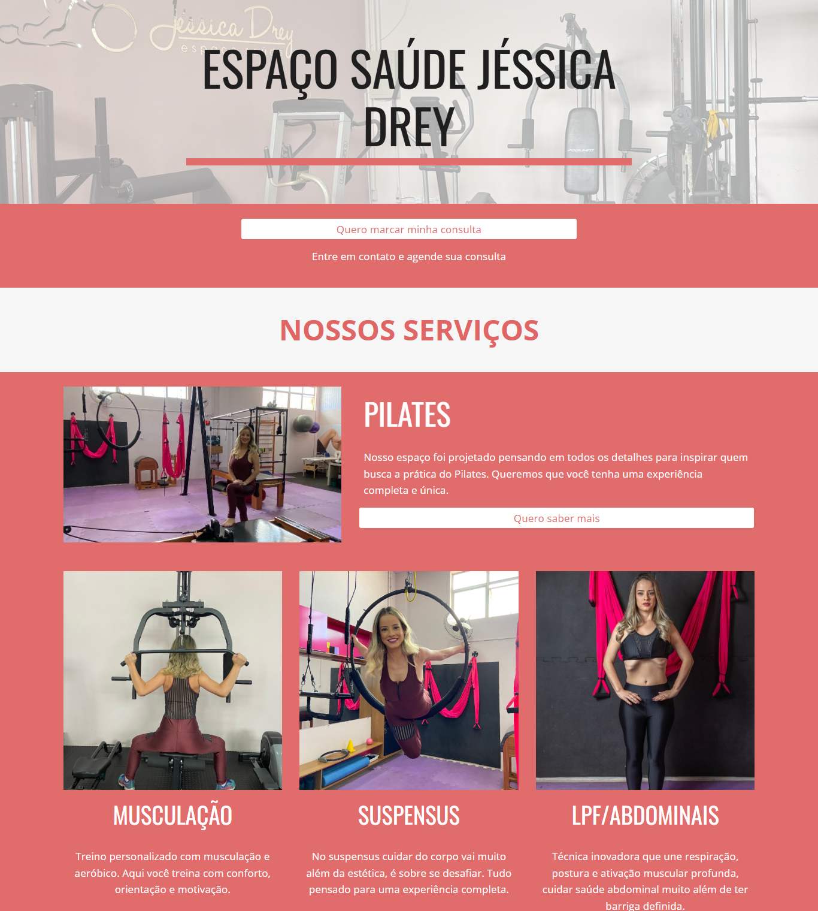
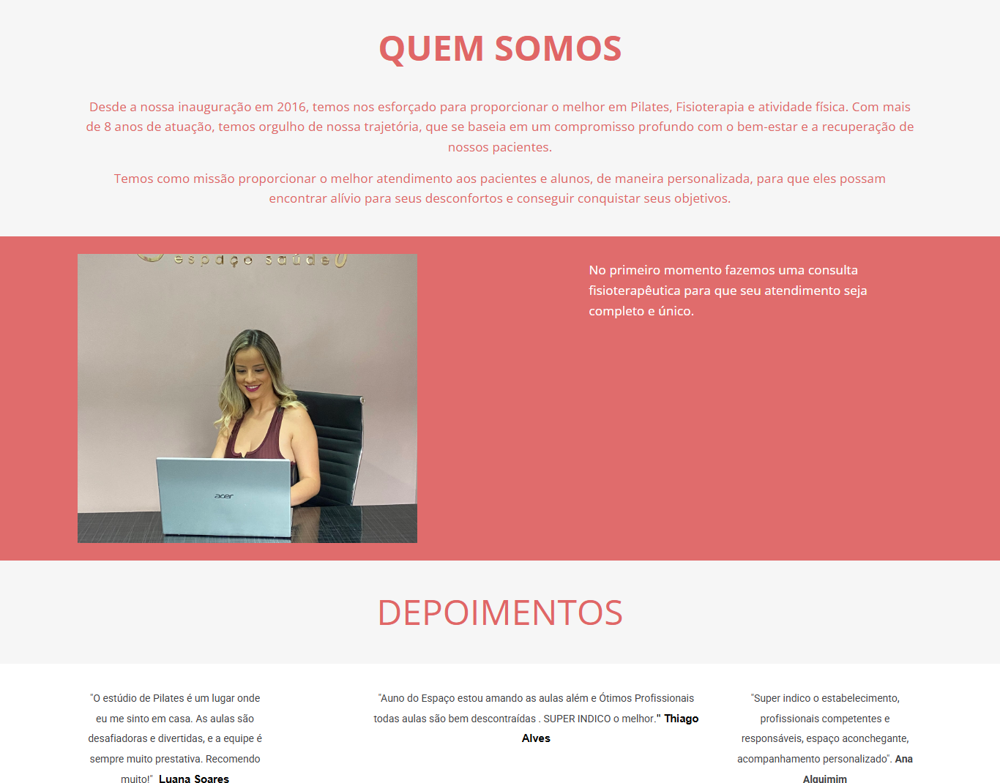

Site atual · PageSpeed Insights
Os quatro números que o Google usa pra te avaliar
Cada nota vai de 0 a 100. Verde é bom (90+), amarelo é mediano (50-89), vermelho precisa de atenção (abaixo de 50). O site atual roda em Google Sites, uma plataforma genérica que carrega muito mais código do que uma página estática precisa.
Core Web Vitals
A experiência de carregamento, em números
São as três métricas que o Google usa diretamente no ranqueamento de busca. No celular o site atual reprova; no computador, passa.
| Métrica | O que mede | Celular | Computador |
|---|---|---|---|
| LCP | Tempo até o maior elemento visível carregar | 19,1s | 1,8s |
| INP | Resposta a um clique/toque | 144ms | 78ms |
| CLS | Elementos que "pulam" durante o carregamento | 0,062 | 0,03 |
| FCP | Primeira coisa visível na tela | 7,2s | 1,2s |
Maiores gargalos encontrados (celular)
Por que o site atual demora 19 segundos pra aparecer no celular
O Lighthouse (motor por trás do PageSpeed) aponta economia estimada em cada item — ou seja, quanto mais rápido o site ficaria se resolvesse aquilo.
O Google Sites carrega scripts e estilos genéricos da plataforma que não têm relação com o conteúdo do Pilates.
Boa parte do código carregado nunca chega a ser executado nessa página — sobra do editor do Google Sites.
Imagens sem compressão adequada nem formato moderno (WebP/AVIF).
Folhas de estilo genéricas da plataforma, a maior parte nunca aplicada ao layout real.
Arquivos que poderiam ficar salvos no navegador do visitante não têm essa regra configurada.
Scripts/estilos que o navegador precisa baixar antes de mostrar qualquer coisa na tela.
Nova versão estática
O que a reconstrução já resolve de fábrica
Trocar o Google Sites por HTML/CSS puro elimina a maior parte dos problemas acima antes mesmo de qualquer ajuste fino.
Zero JavaScript de plataforma — só o necessário pro menu mobile e nada mais.
186 KB em vez de possíveis megabytes, com <picture> servindo o formato certo por navegador.
Evita o "pulo" de layout (CLS) enquanto a imagem carrega.
O site atual não tem nenhuma — a nova versão já publica uma descrição com palavras-chave locais.
ExerciseGym + FAQPage, ajudando o Google a entender endereço, horário e perguntas frequentes.
font-display: swapO texto aparece imediatamente com uma fonte do sistema, sem ficar invisível esperando a fonte customizada.
Pendências reais, encontradas nesta auditoria
O que ainda falta ajustar nesta pasta
Itens específicos, verificados nos arquivos do projeto — não genéricos.
hero-jessica-drey.png só é servido pra navegadores muito antigos sem suporte a WebP, mas ainda assim vale comprimir — hoje ele é 12x mais pesado que a versão WebP.
.ttf sem uso (~310 KB)O CSS só referencia os .woff2 via @font-face. Os .ttf em assets/fonts/ não são carregados por nenhum navegador — dá pra remover da pasta.
A imagem atual mostra uma academia grande, lotada, com TRX, kettlebell e vista de cidade/montanha ao fundo — nada disso existe numa loja de 2º andar de studio de Pilates. Também tem os típicos artefatos de IA (mãos e proporções estranhas se você olhar de perto). Isso reduz a credibilidade assim que alguém abre o site. Recomendo foto real do espaço (mesmo que feita com celular) ou, na falta dela, uma imagem gerada com prompt mais específico: sala pequena, poucos aparelhos de Pilates (reformer/cadillac), sem elementos de academia genérica.
Os 2 depoimentos aparecem como texto comum. Adicionar Review/AggregateRating no JSON-LD ajuda a exibir estrelas direto no resultado de busca — mas só depois de confirmar a nota real e a quantidade de avaliações no Google Business (mesmo cuidado que tomamos no Site 01, pra não publicar número inventado).
og:image com dimensões nem twitter:cardExiste og:title e og:description, mas falta og:image:width/og:image:height e as tags de Twitter Card — hoje um link compartilhado no WhatsApp pode não mostrar preview correto.
Recomendações de SEO
Para reforçar o ranqueamento local
Itens que ainda não existem no projeto, além dos já listados em "pendências".
<link rel="canonical">O <head> não define URL canônica. Quando o domínio final for definido, adicionar essa tag evita problemas de conteúdo duplicado (ex: acesso com e sem www).
og:locale nem og:urlFaltam essas duas tags Open Graph — ajudam redes sociais e o Google a identificar idioma (pt_BR) e URL oficial ao gerar o preview do link.
robots.txt nem sitemap.xmlNão existem em nenhum lugar do repositório. Antes de publicar no domínio final, vale criar os dois — ajuda o Google a rastrear e indexar mais rápido.
O botão "Ver perfil no Google" usa google.com/search?q=.... Trocar pelo link direto do perfil no Google Business (google.com/maps/place/...) tende a casar melhor com o Local Pack — mesma correção já aplicada no Site 01.
Title, meta description e JSON-LD reforçam "Vale do Jatobá", que a captura real do site mostrou ser "Mangueiras". Precisa corrigir antes de publicar, senão o SEO local vai reforçar um bairro errado.
Melhorias gerais
Além de SEO e performance
tel:Todo contato direciona pro WhatsApp. Adicionar <a href="tel:+5531998609016"> como alternativa ajuda quem prefere ligar direto (comum em público mais velho).
Não há Google Analytics/Tag Manager configurado. Sem isso, não dá pra saber quantas pessoas realmente clicam pra chamar — vale configurar um evento simples antes do lançamento.
A captura do site atual trouxe fotos reais da profissional e do espaço (Pilates, Musculação, Suspensus, LPF/Abdominais). Vale usá-las no lugar da imagem gerada por IA já sinalizada nas pendências.
O site direciona contato via WhatsApp (que coleta nome/telefone da conversa). Um link curto de política de privacidade no rodapé é uma boa prática, mesmo sem formulário próprio.
Referência
Como o site atual se apresenta
Captura completa feita em 22/09/2026, cortada em blocos pra facilitar a leitura.

